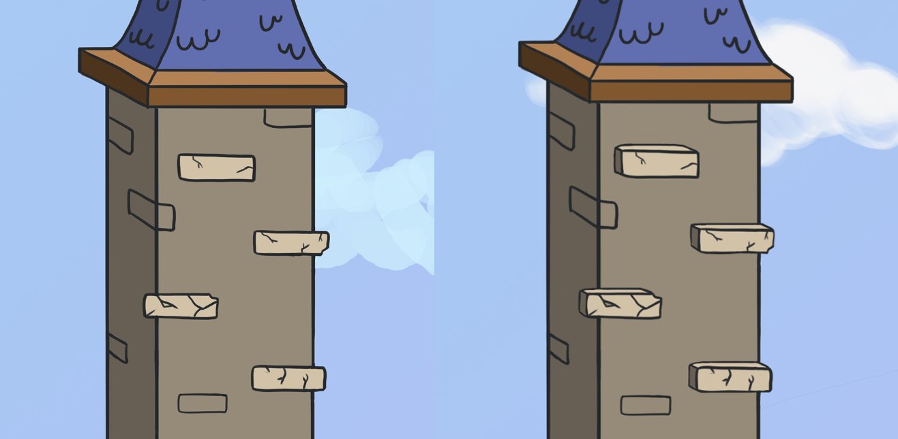
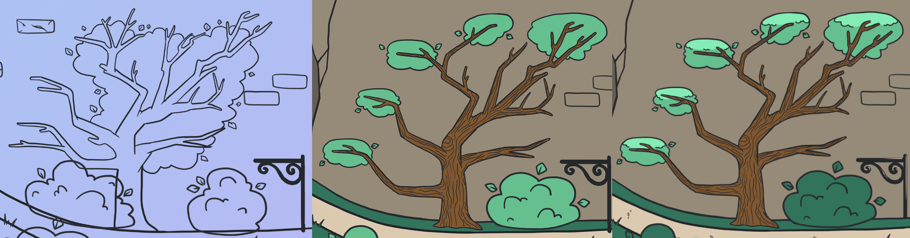

Usability Testing Results
Date: Nov 14, 2017
It’s been a few months since my last post. So far I’ve made lots of progress on usability testing and have completed all of the level art for my game, which I’m tentatively calling “Fortress of Lanterns”, but haven’t done much yet to improve gameplay or animations. Destiny 2’s release, keeping up with Inktober and studying part-time definitely doesn’t help with keeping up the momentum of working on a game.
In my last post I wrote about my plans for this game and what I wanted to get out of usability testing. Since then I’ve gone through two rounds of testing with different people with varying levels of gaming experience. After each round, I made improvements to the game’s visuals to make up for issues players were having. Here they are!
Participants
I had four people test my game in the first round of testing; two play video games regularly and two do not. For my second round, I had two impromptu testers play at the UX Game Summit in Toronto to verify whether some minor changes I made after the first round were a step in the right direction. I probably don’t need to say that the last two testers were very experienced with playing and making games.
Before each test, I gave players some basic context for the game: You’re a ghost who lives in an abandoned castle, and you’re afraid of the dark (aww). Your goal is to light all of the lanterns in the castle. That’s it! I sat back and watched them do their thing and provided no guidance until they gave up.
I should note that I only prompted users about their goal because I currently don’t have any title screen, end conditions, dialogue or anything other than a buggy lantern counter. If I did, I would have just told them to start playing.
Method
My methods were very, very casual. Probably too casual, but I’m not a professional game designer and my goal was to put the game in front of people and find out what some of the major problems were. That seemed to work just fine. I tracked how many lanterns each participant lit, as well as the areas and platforms they discovered or missed.
The major interactive areas I kept tabs on were:
- The tower above the garden
- The tree in the garden
- The chain on the gate drawbridge
- The bricks found everywhere on fortress walls
Testing Results
For my first round of testing, I put a WebGL build on this site that had the first third of the level coloured in but not polished, and the remaining two thirds of the level outlined in black without any colour. I kept in mind during testing that having key parts of the level unfinished and see-through definitely affects how people interacted with objects like rocks, walls and bridges. This build served as a prototype though, and it was enough.
The second round of testing was even more casual than the first. I uploaded a second build and had two people play my game that I had just met. Unfortunately since the tests were impromptu and this wasn’t long after the initial round of testing, I didn’t have a chance to make every change that I wanted to. I was able to colour the level 75% and make some improvements to the tree in the garden. I didn’t even keep track of specific metrics the same way that I did above, but this round gave me a bit more insight into further improvements.
First Round: The areas that my players had the most trouble with were finding the tower (0% success, sadface), tree (50% success), the bricks (50% success) and the chain on the drawbridge (50% success). Resounding mediocrity!
Second Round: Even after making improvements to the colours in the garden and the shape of the tree, it wasn’t immediately obvious that you could jump on the branches to one of the testers. The same issues from the previous round re: the bricks, the tower and the drawbridge persisted.
The Tower: So, no one climbed the tower. This could be a combination of how it appears to be a backround decorative element, and because the bricks don’t stand out enough to tell the player “hey, you can jump on me”.
I’ve addressed this since by breaking the section of the wall in front of the tower to clue players in that there is something going on here, plus I made a global improvement to bricks to make them appear 3D. I hoped that adding these two affordances would at least make people give the tower a second glance.
The brick design, before and after. All bricks in the game now have the 3D appearance seen on the right.
The Chain: For the players that discovered the drawbridge, it was always a pleasant surprise for them which I found really fun. Usually they were trying to jump on absolutely everything and learn by experimenting to see what’s interactive and what isn’t. The participants who didn’t use the chain to get the lantern on the top of the gate wanted to light it by jumping from the platform behind the gate, which I prevented by obstructing it with a huge invisible wall. Oops.
I’m going to keep the chain and allow players to go around the back so they can still light it a second way. Providing multiple pathways to perform the same action is a good UX practice in general, so I think it will apply here too.
The Tree: Only half of my testers got that the tree’s branches also served as platforms. There are a few reasons that could explain this. Firstly, the tree is behind the path and looks quite flat so it could be mistaken for a decorative element much like the tower. Also, the first version of the tree had bare branches with leaves in the background. This wasn’t enough of a clue to hint that you can jump on them. The second version with its platform-like leaves was better, but still wasn’t great because the tree still appeared as a flat, background element.
An example of how the tree design progressed and changed based on testing results.
To attempt to make the branch platforms look even more obvious, I added a few more visual details to make them look 3d. Using additional outlines, I tried to make the branch platforms appear more round. Using shading, I tried to make each one stand out more from the background. Usually the things that you can jump on in the map are highlighted in a light colour, so I am trying to emphasize this wherever I can.
I noticed throughout testing that this rule also applies to areas I didn’t anticipate, like the merlons along the edges of the fortress wall. These are highlighted and appear 3D, so a couple players tried to jump on them. In the next version, I may make it so you can run along the merlons unless it takes too much away from places you need to jump on in the level. Even though you don’t need to use these as platforms to get anywhere, it will help to encourage the mental model of “if it looks 3D, I can probably jump on it”.
The Bricks: The bricks proved to be problematic through both rounds of testing. It wasn’t immediately obvious to about half of players that you could climb on them, which is really bad because I use these things everywhere. You cannot complete the game unless you climb on the bricks. One player who was not used to playing games was also a bit frustrated after falling from a brick staircase leading up to the two towers, so I’ll need to double-check how far they are from each other and ensure that while climbing is still challenging, it doesn’t outright suck.
Similar to what I did with the tree platforms, I’m hoping that by making the bricks appear 3D, players will no longer miss them and it will be obvious that they are platforms. I’m attempting to do this by making them appear as prisms instead of flat rectangles, and ensuring highlights and shadows are consistent with other platforms on the map.
Conclusion
That’s it! At the time of this blog post’s writing, I’m working on exporting the finished pieces of the level into Unity. After that, I’ll be ironing out some bugs and adding a beginning and end to the story. After that, a little more testing and hopefully I can get a working game out the door. Look out in the future for an update where I’ll show my progress on the intro screen, user interface and animations.